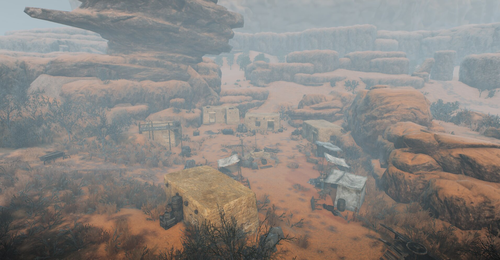

Overview
Witcher III: Revenge of Ofir is an ambitious fan made expansion that transports players to the mysterious eastern empire of Ofir. This complete overhaul delivers a brand new experience, featuring an entirely new explorable region, original quests, new characters, expanded systems, and deeply integrated rich lore.
My Role
I'm working as a Level Designer within a 25 member team. My main responsibilities involve creating POIs, implementing them in the engine and assisting with worldbuilding, focusing on how different areas connect seamlessly and how players are naturally guided through the open world.
- Designing and implementing level layouts directly inside the engine
- Researching existing Witcher lore and real world references to ensure environmental authenticity and narrative consistency
- Documenting and presenting design decisions clearly within the team environment
Contributions So Far
The sections below showcase the design tasks I was directly responsible for.
Abandoned Village – Point of Interest (POI)
One of my assigned tasks was to design an Abandoned Village Point of Interest (POI). Just like in The Witcher 3, when Geralt defeats the monsters, the village gets liberated and repopulates with civillians.
Design Intent
- Design a main combat arena
- Communicate abandonment through environmental storytelling
- Player agency on how they approach this POI
- Guide player using leading lines and visuals
Design Solutions
- Dried vegetation and dead trees to reinforce decay
- Half buried wagons placed as breadcrumbing elements
- Half buried houses to enhance abandonment
- Central well used as a visual anchor
- Prop placement to imply former trade activity
- Used crows as a visual anchor to attract the player from afar

Intended Final Player Experience
- When entering the village, the player was meant to feel a sense of unease and aftermath
Final Result




Main Village – House Interior Design
My second major task was designing and detailing 18 individual house interiors within the main village. Wadi al-Salam is the main village situated by the lake. It is home primarily to workers but also hosts a variety of merchants and farmers. Having this in mind, I wanted the interiors to represent that time by having the houses being practical and at the same time stay true to detail and the way of life back then.
My main goal was to create believable, immersive and realistic interiors that captured the way of living at that time.
Design Intent
- Researched authentic Arabian and Bedouin houses to ensure realism and cultural accuracy in the interiors
- Logically placed props inside homes based on real life functionality and daily use
- Analyzed village exteriors to determine suitable resident types for each house and create contextual harmony
Design Solutions
- Avoided modern elements like wardrobes, shelves, bathtubs and elevated beds Everything in that era was portable, functional and low cost
- Stay true to historical way of life. Carpets and mattresses on the floor for sleep
- Kitchen spot always near window air ventilation
- Wooden chests/baskets,jars,vases provide storage space for clothes, food, drinks and personal items
Final Result


More contributions to be added...